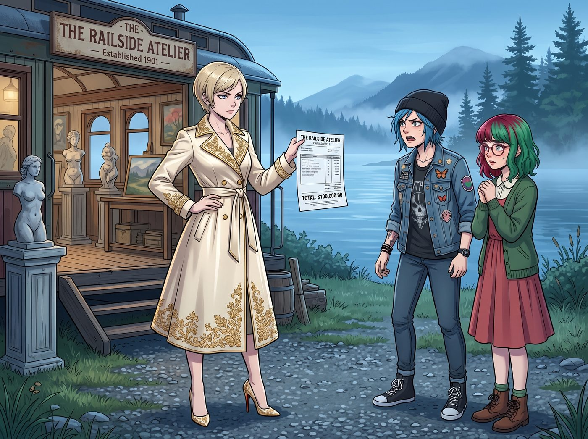
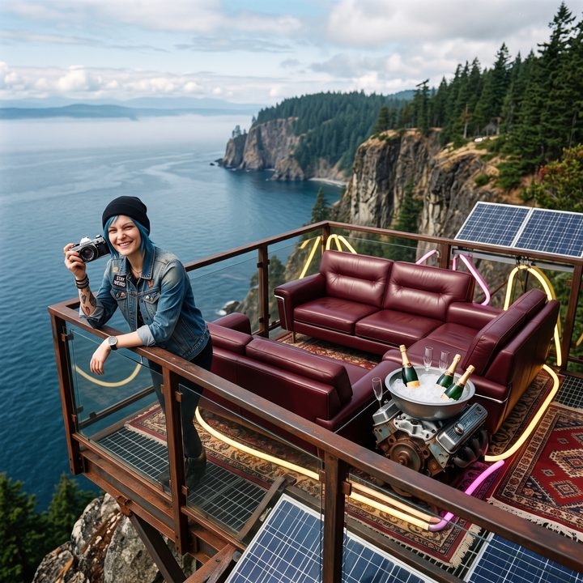

非軍規的縫合怪


自從海盜塔被改造成前線基地之後，Victoria 雖然捏著鼻子認了，但身為 Chase 財團的繼承人，她字典裡從來沒有「白白被坑十萬美金」這句話。
資本家的報復，往往是優雅且直擊靈魂的。
一、最後通牒
這天早晨，Victoria 穿著一襲高定的真絲風衣，踩著紅底高跟鞋，手裡拿著那張高達十萬美金的帳單列印件，冷酷地站在了 Chloe 和 Lily 面前。
「十萬美金。如果放在華爾街，這筆錢足夠我買下一個小型初創公司的董事會席位。而妳們，卻用它給我建了一個充滿機油味、輻射警告和鐵鏽的破塔。」Victoria 將帳單拍在桌上，發出清脆的響聲，她高傲地揚起下巴，對著這兩個工程負責人下達了最後通牒：
「現在，我要行使我作為最大投資人的權益。我要妳們在海盜塔的頂層，兌現 Chloe 畫的那個大餅——一個符合有錢無聊富豪圈審美的廢土風頂級觀景台。」
Victoria 轉過頭，死死盯著正準備開口的實習生 Lily，直接用魔法打敗魔法：「還有，Lily 小姐。我事先聲明，不准出現任何軍規級別的設備！不准有迷彩塗裝！不准有雷達天線！不准用戰術這個詞！我要的是能在上面喝著紅酒看日落的奢華露營體驗，如果我上去後發現妳把它搞成了防空塔，我就切斷二號車廂所有的海外代購結算通道！」
被掐住命門的 Chloe 和 Lily 對視了一眼。
「老天，這資本家比州警還難伺候。」Chloe 嘀咕道。
Lily 則乖巧地推了推眼鏡，大眼睛裡閃過一絲遇到挑戰的狂熱：「不使用軍工標準來實現絕對防禦與環境控制？Victoria 學姐，您的民用級奢侈品需求，確實是一個非常有趣的工程學悖論。我們接單了。」
二、廢土賽博與民用黑科技的縫合怪
三天後，在 Victoria 的嚴厲監督下，海盜塔VIP觀景台落成了。
當傍晚的夕陽將奧林匹亞半島的海岸線染成橘紅色時，Victoria 端著一杯紅酒，帶著挑剔的目光，踏上了塔頂。
出乎她意料的是，眼前沒有冰冷發達的軍事防禦工事，反而呈現出一種極度奢華又帶著狂野美感的賽博波西米亞風。
Chloe 充分發揮了她撿破爛和車輛改裝的天賦。觀景台的中央，擺著一組從報廢的六零年代凱迪拉克上拆下來的酒紅色真皮沙發，被她擦得一塵不染，甚至還帶著淡淡的皮革香。沙發周圍，是用廢棄的霓虹燈管重新焊接成的氛圍燈，散發著溫暖的暖黃色與紫紅色光芒。旁邊還有一個用V8引擎缸體改造而成的冰桶，裡面正冰鎮著 Victoria 的香檳。
「怎麼樣，女王陛下？」Chloe 靠在欄杆上，得意地挑眉，「這叫後現代廢土工業風。比妳那些無聊的極簡主義俱樂部有品味多了吧？」
三、民用級的漏洞
Victoria 滿意地坐進了柔軟的凱迪拉克沙發裡，剛想誇獎兩句，卻突然意識到一個問題。塔頂明明沒有任何實體玻璃，但太平洋吹來的刺骨海風，卻在距離沙發一公尺外的地方奇蹟般地消失了，整個觀景台的溫度維持在完美的舒適區間。
「Lily？」Victoria 警惕地看向站在角落裡喝牛奶的實習生，「妳是不是又用了什麼軍用級的力場發生器？我說過不准用軍規！」
「絕對沒有，Victoria 學姐。我嚴格遵守了您的純民用合規協議。」Lily 走過來，乖巧地用遙控器點了一下，空氣中隱約閃過一道微弱的光幕。
「這是超聲波空氣幕簾與頂級溫室農業氣候控制系統的結合體。」Lily 用最甜美的聲音，介紹著這套設備：「我『借用』了西雅圖一家頂級蘭花培育基地的環境演算法。它能實時計算風向，並用高壓氣流在我們周圍形成一道看不見的牆。這完全是為了農業和商場大門設計的民用科技，絕對沒有違反您的禁令呢。」
Victoria 愣住了。用種名貴蘭花的設備來給她擋海風？這很奢侈，非常奢侈，完全符合富豪的做派。
「那……這個呢？」Victoria 指著頭頂上幾個正在無聲旋轉的、看起來像某種科幻電影裡裝置的小黑盒。
「哦，那個呀，那是商用級除蟲雷射系統。」Lily 眨了眨無辜的大眼睛，「因為海邊蚊蟲很多，這套設備可以利用紅外線偵測附近的飛行物體軌跡。如果偵測到有商用無人機試圖靠近長時間盤旋——比如想偷拍您的狗仔設備——它會自動追蹤鎖定，對著鏡頭方向持續照射大約十秒鐘，讓對方的感光元件暫時過曝失靈，鏡頭會拍出一片死白，什麼都拍不到。原理跟這幾年開始流行的反狗仔無人機防護裝置差不多，我只是把靈敏度和追蹤精準度調得更高了一點。」
「所以它不會真的把無人機打下來？」Victoria 挑眉問道。
「當然不會，這只是讓對方的攝影功能暫時失效，等它自己飛走而已。」Lily 露出一個純潔無暇的微笑，「畢竟，保護老錢階級的隱私，用讓鏡頭『瞎』一下就夠了，不需要真的動用什麼激烈手段。」
四、資本家的墮落與妥協
Victoria 深吸了一口氣。
她看著頭頂那套能讓偷拍鏡頭失靈的設備，又感受著那套能抵擋強風的蘭花保溫系統，最後將身體深深地陷進了那張舒適的凱迪拉克真皮沙發裡。
沒有迷彩，沒有雷達，沒有戰術字眼。Lily 確實在字面意義上完美遵守了不准使用軍規的條件，用民用科技堆砌出了一套低調卻極其講究的隱私防護方案。
但是……
Victoria 抿了一口紅酒，看著遠處太平洋上絕美的日落，海風被無形的氣幕擋在外面，連一絲頭髮都沒有被吹亂。
這實在是太舒服了。
「……幹得不錯，Price。Lily，妳的民用方案我也很滿意。」Victoria 最終選擇了向這種極致的廢土奢華妥協。她優雅地交疊起雙腿，徹底享受起了應得的服務，「十萬美金，這景觀和服務，勉強算妳們回本了。」
這時，通往塔頂的改裝電梯發出叮的一聲。
Kate 繫著小圍裙，端著一個精緻的木質托盤走了出來。上面擺滿了剛切好的火腿、無花果、起司，以及 Max 剛烤好的法式長棍麵包。Max 則背著寶麗來相機跟在後面，驚嘆地看著這個被改造成賽博波西米亞風的塔頂。
「哇，這裡真的好漂亮呀，就像電影裡的空中花園一樣。」Kate 將食物放在 V8 引擎改裝的桌子上，溫柔地對 Victoria 笑著，「Victoria，謝謝妳贊助了這麼棒的地方，大家以後可以經常在這裡一邊看星星，一邊吃野餐了呢。」
面對小天使的感謝，名媛有些不自然地清了清嗓子：「咳……我也只是為了提升我的生活品質而已。既然妳們把食物拿上來了，那就允許妳們在這裡待一會兒吧。」
夕陽下，Max 舉起相機，將這個由資本家的傲嬌、街頭霸王的破爛、行政黑魔法師的縫合巧思、以及大天使的點心共同構成的廢土VIP觀景台，永遠地定格在了一張底片上。